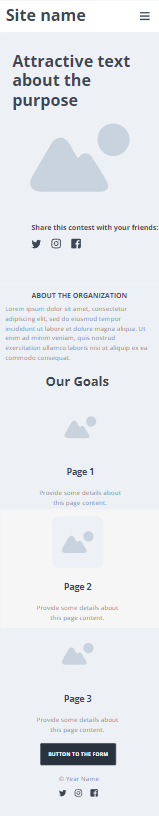
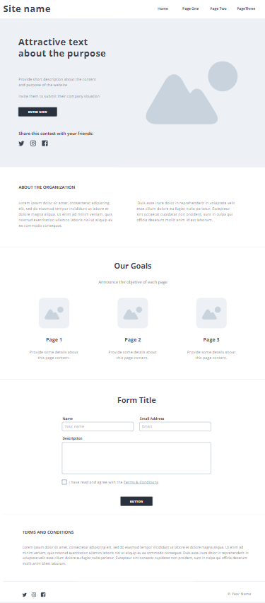

Site Name
Account Task Manager
This name was selected because it represents a site that provides important information for entrepreneurs and accountants about accessory obligations based on Brazilian legislation.
Optional Domain: accountingtasks.org
Site Purpose
The site provides detailed information about tasks related to tax compliance, due dates, and potential fines. It aims to help users, especially company owners and accountants, to manage their legal obligations more effectively.
Scenarios
These are the questions site visitors, who represent the target audience, are likely to ask:
- What are the accessory obligations my company has to fulfill?
- What are the due dates and fines for the accessory obligations?
Color Schema
- Dark-grey: Used for headings, background of the header, and navigation bar.
- Red-orange: Used as accent colors for buttons and icons.
- Blue-violet: Used for links, hover states, and subheadings to create a friendly contrast.
Typography
- Roboto: Used for headings and subheadings to maintain readability.
- Open Sans: Used for body text and paragraphs, offering a modern and clean look.
Wireframe
The wireframe will present the layout of the homepage in both mobile and desktop views.
Mobile View:
Desktop View:
